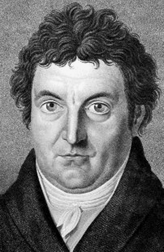

Неправильный ответ
Иоганн Готлиб Фихте
Увы, но ваш ответ неправильный.
Иоганн Готлиб Фихте родился 19 мая 1762 года и был одним из представителей немецкого идеализма и основателей группы направлений в философии, которые развились из теоретических и этических работ Иммануила Канта.